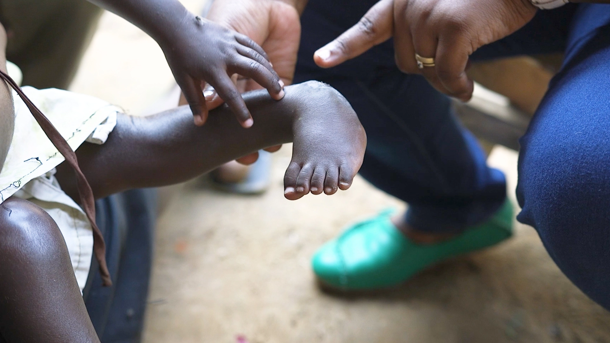

Mercy Killing
Een kind met een beperking grootbrengen is een uitdaging. Voor ouders in een ontwikkelingsland is het nog moeilijker. Door onze journalistieke expertise en technieken storytelling kijk je ook onze long format content geboeid uit tot de laatste seconde.
Internationaal opgepikt
De documentaire had lokaal op CANVAS in het format VRANCKX sterke kijkcijfers: 242.288. Verschillende media pikten de documentaire op. We vertoonden in verschillende cinemazalen, hogescholen en universiteiten. De Finse publieke omroep vertoonde Mercy Killing in Finland en ook BBC-Africa had interesse. Die laatste kochten de rechten en vertoonden in 17 landen.
